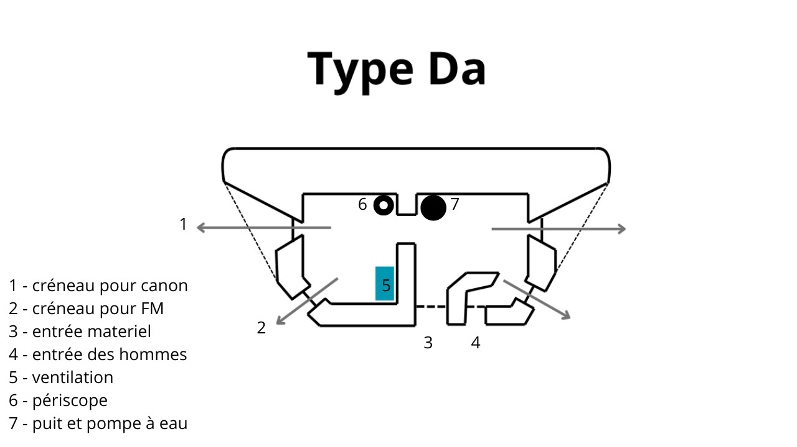
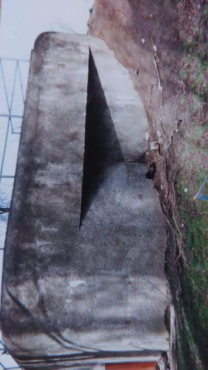
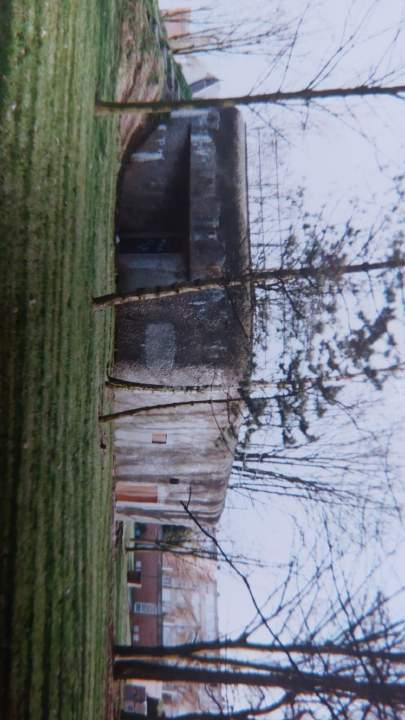
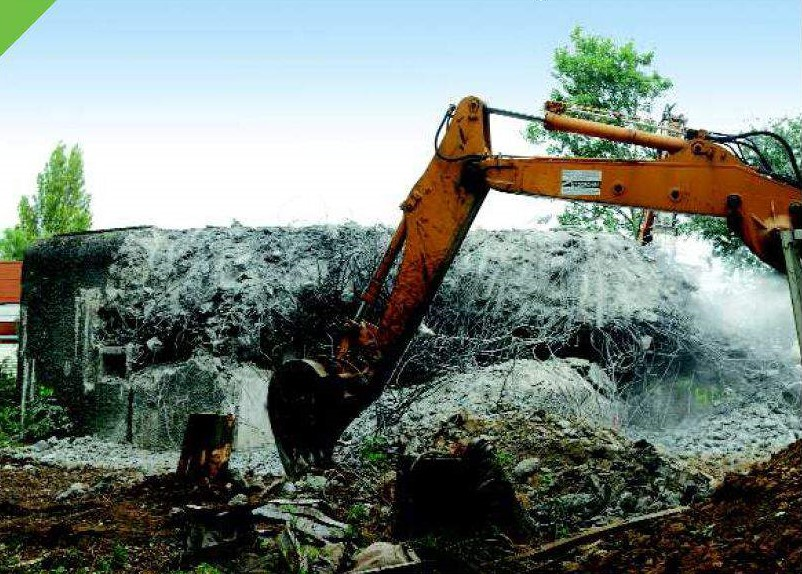
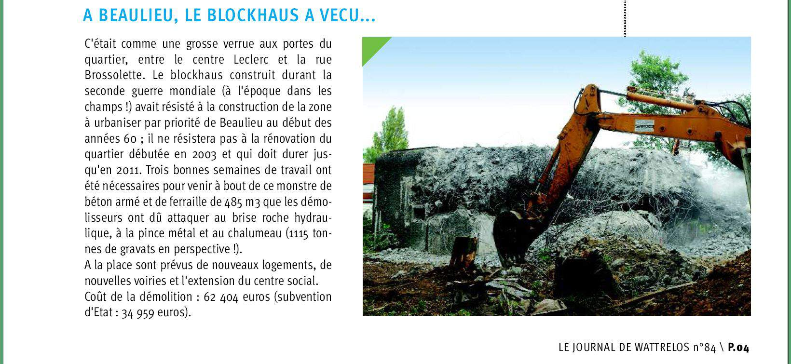

B284- Beaulieu Nord
Secteur : SFL
Constructeur : entreprises civiles
Commune : Wattrelos
État : disparu
Nom : B284
Dénomination : Beaulieu Nord
Description
Blockhaus de type Da
Fiche technique
Fonction : défendre la frontière d’une invasion
Unitées : Septembre-Novembre 1939 : 100ème R.I, Novembre 1939 : 201ème R.I, Novembre 1939-Mai 1940 : BEF
Type Da
Blockhaus double de flanquement sans sous-sol. Il y a 2 entrées avec des portes blindées, une pour l’armement et l’autre pour
l’infanterie. Il dispose de deux créneaux principaux pour canon ou mitrailleuses et de 2
créneaux de défense rapprochée pour FM. Les douilles étaient évacuées par un conduit menant
à des fosses à douilles. Il était équipé d’une
ventilation forcée à bras.

image de mars 1994

image de mars 1994

image de 2006 (destruction)
source : ville de Wattrelos

source : ville de Wattrelos
article dans le journal municipal de Wattrelos numéro 84

Documents et photographies
Remerciements à la ville de wattrelos pour nous avoir permis d’utiliser la photo de la destruction.
Retrouvez plus d’infos avec notre livre !
.png)